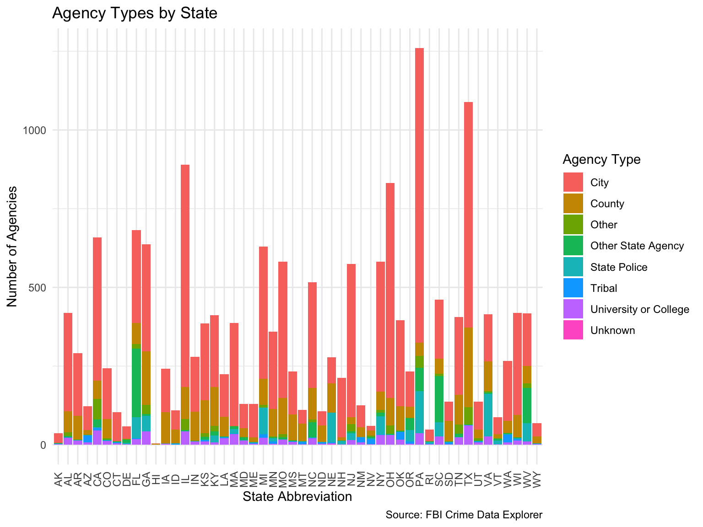
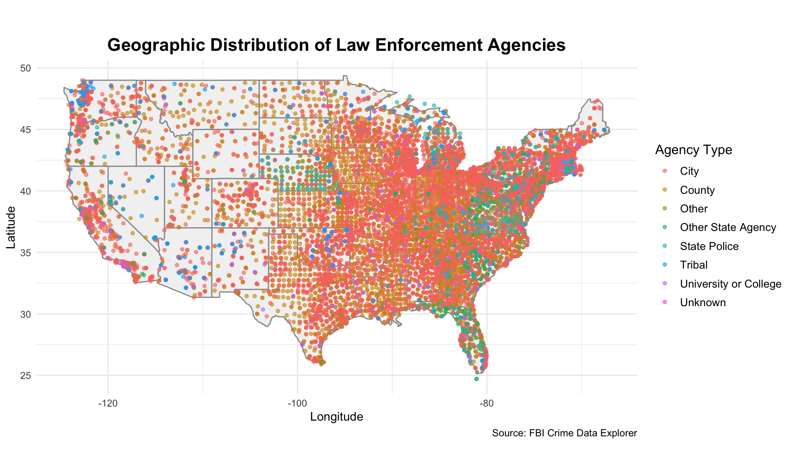
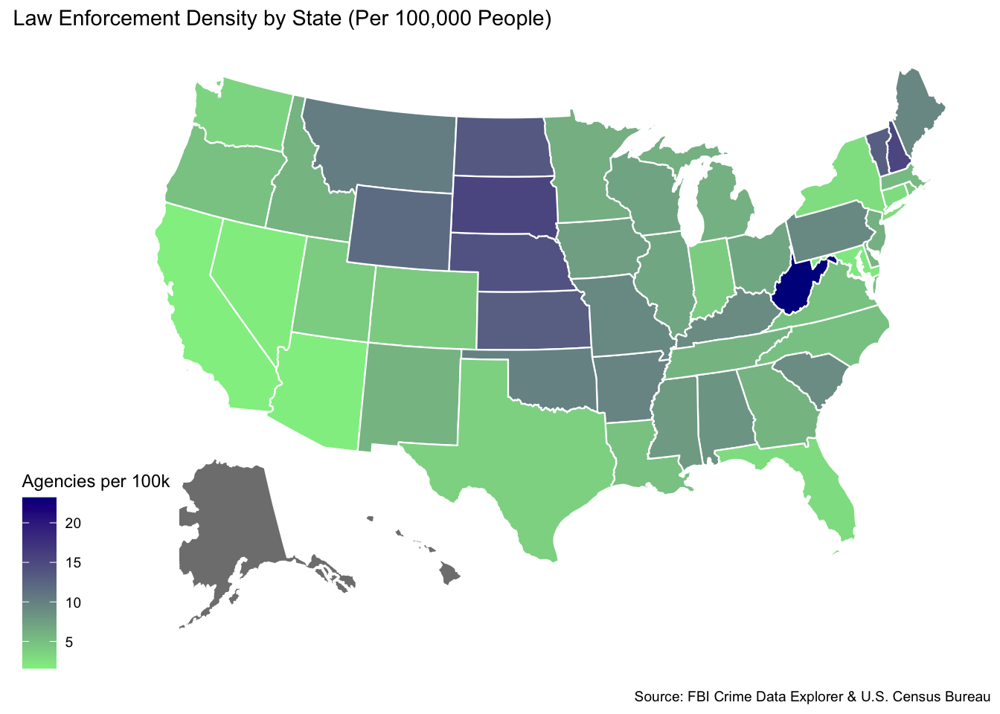
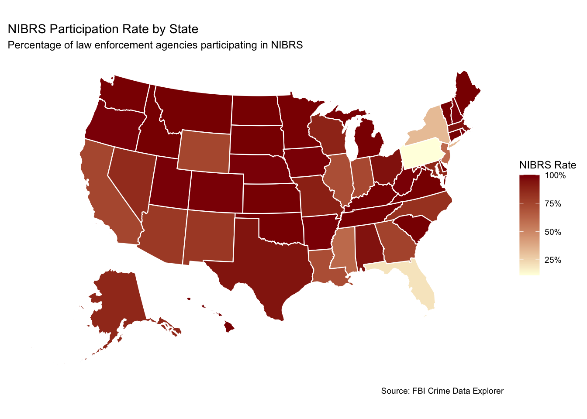
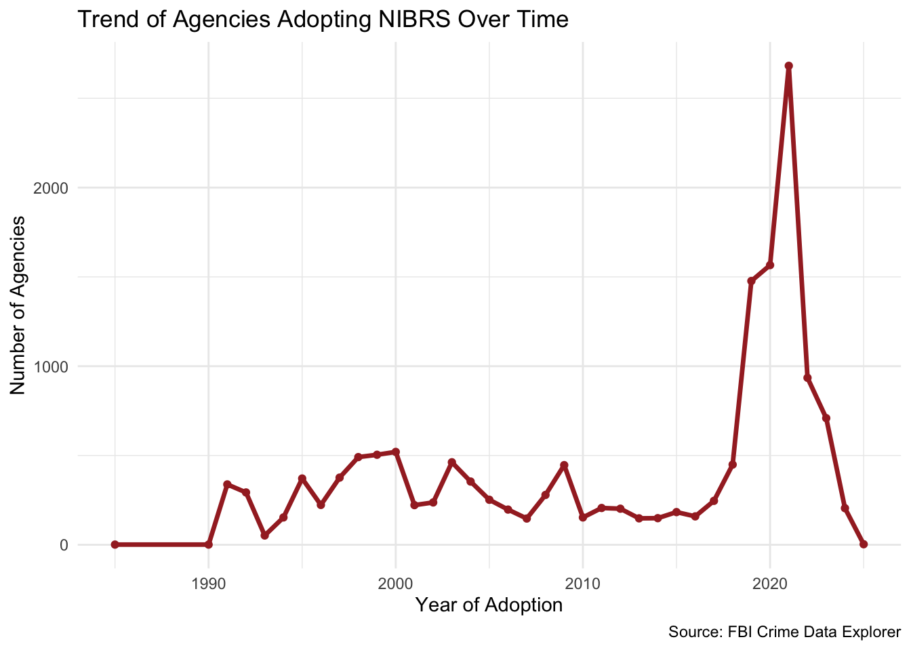

| Variable | Type | Description |
|---|---|---|
| ori | character | Unique ID used to identify an agency. |
| county | character | The county associated with the agency’s jurisdiction within a state. |
| latitude | double | The approximate latitude of the agency. |
| longitude | double | The approximate longitude of the agency. |
| state_abbr | character | The abbreviated two letter state code for the agency's location. |
| state | character | The full name of the state where the agency is located. |
| agency_name | character | The official name of the agency. |
| agency_type | character | The type or category of the agency, such as city or county. |
| is_nibrs | logical | Indicates whether the agency participates in the FBI’s National Incident-Based Reporting System (NIBRS). |
| nibrs_start_date | character | The date on which the agency began reporting data to NIBRS. |
| nibrs_year | double | The year on which the agency began reporting data to NIBRS. |
Who is Reporting Crime? –An Analysis of NIBRS System Capture Participation Rate Maps Across the U.S.
Assignment 4 ETC5512
Question 1
My question is the distribution of types of law enforcement agencies in each state and their percentage of NIBRS participation and adoption trends. By investigating the types of agencies in each state, the distribution of agency types, the percentage of agency participation in NIBRS reporting, and trends in NIBRS adoption. Crime data changes rapidly on a daily basis and the fluidity of crime can be reflected in this dataset.
Question 2
Data Description
The data for this analysis comes from the FBI Crime Data API compiled in tidytuesday. there is agency-level data for all 50 U.S. states. The dataset provides detailed information on law enforcement agencies that have submitted data to the FBI Uniform Crime Reporting (UCR) program and are displayed on the Crime Data Explorer (CDE).
Question 3
Readme
Author: Xinran Yang
Data Source: Official API interface from FBI Crime Data Explorer, collected and maintained by the Federal Bureau of Investigation (FBI).
Data Type: administrative census.
Source Description: The file aencies.csv is published by the TidyTuesday community and contains basic information about U.S. law enforcement agencies and their participation in the National Incident Based Reporting System (NIBRS).
Licience: CC0 1.0 Universal Public Domain Dedication. https://github.com/rfordatascience/tidytuesday/blob/main/data/2025/2025-02-18/readme.md
Data privacy
This dataset contains no personal, case details or identifying information and is entirely agency-level data with no privacy implications.
The data is provided through the U.S. governments open platform API, which belongs to the public resources, and is used legally and without copyright issues。
Ethical Considerations
Oversimplifying the interpretation of the social significance of law enforcement data.
Making a direct correlation between agency participation in NIBRS and the quality of law enforcement.
Omitting a misunderstanding of the reasons for missing data.
data dictionary
Question 4
# Download dataset
library(readr)
library(httr2)
library(jsonlite)
library(dplyr)
library(purrr)
## 1. Get a FBI Crime Data API Key from the docs here: https://cde.ucr.cjis.gov/LATEST/webapp/#/pages/docApi
## 2. Set an environment variable via
## 3. Run the script which will access your environment variable via
state_abbrs <- c(
"AL", "AK", "AZ", "AR", "CA", "CO", "CT", "DE", "FL", "GA",
"HI", "ID", "IL", "IN", "IA", "KS", "KY", "LA", "ME", "MD",
"MA", "MI", "MN", "MS", "MO", "MT", "NE", "NV", "NH", "NJ",
"NM", "NY", "NC", "ND", "OH", "OK", "OR", "PA", "RI", "SC",
"SD", "TN", "TX", "UT", "VT", "VA", "WA", "WV", "WI", "WY"
)
api_key <- "1HCS2tzlqdkThSAEbVq9nfNZDaCB7xo9Lia43fs9"
parse_nibrs_date <- function(date_val) {
if (is.null(date_val)) {
NA_character_
} else if (is.list(date_val)) {
if (length(date_val) > 0) as.character(date_val[[1]]) else NA_character_
} else {
as.character(date_val)
}
}
fetch_agency_data <- function(state_abbr, api_key) {
url <- sprintf(
"https://api.usa.gov/crime/fbi/cde/agency/byStateAbbr/%s?API_KEY=%s",
state_abbr, api_key
)
response_text <- request(url) %>%
req_perform() %>%
resp_body_string()
agency_data <- fromJSON(response_text, flatten = TRUE)
agency_df <- if (is.data.frame(agency_data)) {
agency_data
} else if (is.list(agency_data)) {
bind_rows(agency_data)
} else {
stop("Unexpected JSON structure: not a list or data frame.")
}
if ("nibrs_start_date" %in% names(agency_df)) {
agency_df <- agency_df %>%
mutate(nibrs_start_date = map_chr(nibrs_start_date, parse_nibrs_date))
} else {
agency_df$nibrs_start_date <- NA_character_
}
agency_df$state <- state_abbr
agency_df
}
agency_data_list <- list()
qa_data_list <- list()
for (state in state_abbrs) {
cat("Fetching data for state:", state, "\n")
state_agency_df <- fetch_agency_data(state, api_key)
agency_data_list[[state]] <- state_agency_df
qa_data_list[[state]] <- tibble(
state = state,
response_length = nrow(state_agency_df)
)
}
agencies <- bind_rows(agency_data_list) |>
mutate(agency_type = agency_type_name, county = counties, state = state_name) |>
select(ori, county, latitude, longitude, state_abbr, state, agency_name, agency_type, is_nibrs, nibrs_start_date)
# QA checks
response_qa <- bind_rows(qa_data_list)
agencies_qa <- agencies %>%
group_by(state) %>%
summarise(n_ori = n_distinct(ori), .groups = "drop")
qa_comparison <- inner_join(response_qa, agencies_qa, by = "state") %>%
mutate(match = response_length == n_ori) %>%
filter(match != TRUE)
print(qa_comparison)
# Data cleansing and checking
library(dplyr)
library(lubridate)
## Create a new variable: NIBRS start-up year
agencies <- agencies %>%
mutate(nibrs_year = year(nibrs_start_date))I have chosen not to store the data locally, because it can be downloaded easily provided there is an internet connection.
Reference
Ford Johnson. (2025). tidytuesday/data/2025/2025-02-18/readme.md at main · rfordatascience/tidytuesday. GitHub. https://github.com/rfordatascience/tidytuesday/blob/main/data/2025/2025-02-18/readme.md?plain=1
Grolemund, G., & Wickham, H. (2011). Dates and Times Made Easy withlubridate. Journal of Statistical Software, 40(3). https://doi.org/10.18637/jss.v040.i03
Ooms, J. (2014). The jsonlite Package: A Practical and Consistent Mapping Between JSON Data and R Objects. ArXiv:1403.2805 [Cs, Stat]. https://arxiv.org/abs/1403.2805
Wickham, H. (2021). httr2: Perform HTTP Requests and Process the Responses. https://doi.org/10.32614/cran.package.httr2
Wickham, H., François, R., Henry, L., & Müller, K. (2019). A Grammar of Data Manipulation [R package dplyr version 0.8.3]. R-Project.org. https://cran.r-project.org/package=dplyr
Wickham, H., & Henry, L. (2023). Functional Programming Tools [R package purrr version 1.0.2]. R-Project.org, R package version 1.0.4. https://cran.r-project.org/package=purrr
Wickham, H., Hester, J., & Bryan, J. (2021). Read Rectangular Text Data [R package readr version 2.0.1]. Cran.r-Project.org. https://cran.r-project.org/package=readr
Zhu, H. (2021). Construct Complex Table with “kable” and Pipe Syntax [R package kableExtra version 1.3.4]. Cran.r-Project.org. https://cran.r-project.org/package=kableExtra
Introduction
The United States has had a criminal record since its founding, and it has fluctuated greatly over time. Furthermore, as previously reported, crime rates in the United States can vary dramatically depending on geographic location, with some jurisdictions experiencing little to no serious crime and others (particularly those that are more industrialised) experiencing higher numbers.
The two main sources of crime data in the United States are the Federal Bureau of Investigations (FBI) Uniform Crime Reports, which incorporate the eight types of crime recorded by law enforcement, and the Bureau of Justice Statistics (BJS) National Crime Victimisation Survey (NCVS). The primary source of data for this blog is the Uniform Crime Reports from FBI.
Why Analyze Agencies from the FBI Crime Data?
In recent years, security issues in the United States have received global attention. As a result, there has been public interest in assessing the quality, representativeness, and usefulness of national crime statistics by understanding the structure of law enforcement agencies and their participation in NIBRS. The blog hopes to use this dataset to interpret the data and to be able to identify and understand crime trends in the United States. In turn, the blog hopes to identify security barriers that hinder the development of modern American society.
On a personal note, I had accidentally watched a vlog on Tiktok before that a vlogger visited one of the most dangerous area in the US and was assaulted in a neighbourhood in the US due to some unexpected incident. Meanwhile, I have been planning to travel to the United States, in order to protect my life during the trip, so I would like to know about the safety issues in the United States.
Where Can We Get Agencies from the FBI Crime Data?
The FBI crime data can be accessed at https://cde.ucr.cjis.gov/LATEST/webapp/#/pages/docApi. Below are some of the results of the data captured and subjected to data cleansing:
ori county latitude longitude state_abbr state
1 AL0430200 LEE 32.60406 -85.35305 AL Alabama
2 AL0430100 LEE 32.60809 -85.47514 AL Alabama
3 AL0430000 LEE 32.60406 -85.35305 AL Alabama
4 AL0070100 BIBB 33.01589 -87.12715 AL Alabama
5 AL0070000 BIBB 32.94000 -87.11683 AL Alabama
6 AL0070300 BIBB 33.01589 -87.12715 AL Alabama
agency_name agency_type is_nibrs nibrs_start_date
1 Opelika Police Department City TRUE 2021-01-01
2 Auburn Police Department City TRUE 2020-12-01
3 Lee County Sheriff's Office County TRUE 2012-04-01
4 Centreville Police Department City TRUE 2020-01-01
5 Bibb County Sheriff's Office County TRUE 2021-01-01
6 West Blocton Police Department City TRUE 2020-01-01
nibrs_year
1 2021
2 2020
3 2012
4 2020
5 2021
6 2020This data provides information on basic offence data, such as the county, agency, the type of agency, the date of recorded into NIBRS, etc.
Data Analysis
Analysing the Distribution of Types of Law Enforcement Agencies by State
As can be seen in Figure 1, City types are the highest number of organizations in almost all U.S. states. Meanwhile, County types are also represented in several states. The number of state police agencies agencies is small but widely distributed. University or College agencies and Unknown types are the least numerous.

Analysing the Geographic Distribution of Law Enforcement Agencies
According to Figure 2, urban law enforcement agencies are densely distributed in the east and sparsely distributed in the west. Pink dots are especially densely distributed in the Northeast, Midwest, and South. The West (e.g., Nevada, Utah, Colorado) is relatively sparse. County law enforcement agencies are more widely distributed in the Midwest and West. This reflects the uneven distribution of population and cities in the U.S.-the East is densely populated, has many cities, and has a high demand for law enforcement agencies, while the West is sparsely populated and has a low density of law enforcement agencies.

To further explore the correlation between population and law enforcement agencies, U.S. Census 2020 data was read and the density of law enforcement agencies per state was calculated, as detailed in Figure 3.
ori county latitude longitude state_abbr state
1 AL0430200 LEE 32.60406 -85.35305 AL Alabama
2 AL0430100 LEE 32.60809 -85.47514 AL Alabama
3 AL0430000 LEE 32.60406 -85.35305 AL Alabama
4 AL0070100 BIBB 33.01589 -87.12715 AL Alabama
5 AL0070000 BIBB 32.94000 -87.11683 AL Alabama
6 AL0070300 BIBB 33.01589 -87.12715 AL Alabama
agency_name agency_type is_nibrs nibrs_start_date
1 Opelika Police Department City TRUE 2021-01-01
2 Auburn Police Department City TRUE 2020-12-01
3 Lee County Sheriff's Office County TRUE 2012-04-01
4 Centreville Police Department City TRUE 2020-01-01
5 Bibb County Sheriff's Office County TRUE 2021-01-01
6 West Blocton Police Department City TRUE 2020-01-01
nibrs_year total_population
1 2021 5024279
2 2020 5024279
3 2012 5024279
4 2020 5024279
5 2021 5024279
6 2020 5024279

The darker the colour, the higher the number of law enforcement agencies per 100,000 persons. West Virginia has the darkest colour, and the chart shows it as the state with the highest density of law enforcement agencies. Some Midwestern states (e.g., Nebraska, South Dakota, Vermont) also show high densities. But some of the more populous states such as California, Texas, and Florida are lighter, indicating that while the number of agencies is high, the density is low relative to the population.
Analysing the NIBRS Participation Rate by State
Most state law enforcement agencies in the U.S. have high NIBRS participation rates, with nearly full participation in regions such as the Midwest, South, and New England. Pennsylvania, Florida, Illinois, etc. are light coloured, indicating low collection rates or not yet fully NIBRS-enabled.The United States as a whole is advancing well, but there is a lag in advancement in individual large states.

Analysing the Trend of Agencies Adopting NIBRS Over Time
As evidenced in Figure 5, 1990s - 2015 was a period of slow growth in the number of agencies adopting NIBRS. Beginning in 2016, the number of adoptions rises rapidly, especially in 2019 and 2020, peaking in 2020 with nearly 2,500 law enforcement agencies adopting NIBRS that year.After 2021, the number of new adoptions declines rapidly.

What can we conclude from our analysis of Agencies from the FBI Crime Data?
Law enforcement agencies across the United States show significant interstate differences in density, type, and NIBRS participation rates, and these differences are closely related to the structure and geographic distribution of agencies in each state. Central and Eastern states are dominated by a large number of local agencies with high agency density and generally high NIBRS participation rates, while populous states such as California and Florida have low participation rates despite a large number of agencies, reflecting challenges with integration and data reporting.
Therefore, choosing to travel or reside in cities in the central and eastern United States would provide a relatively high level of security.
References
Becker RA, Wilks AR, Brownrigg R, Minka TP, Deckmyn A (2025). _maps: Draw Geographical Maps_. doi: 10.32614/CRAN.package.maps
Di Lorenzo P (2025). _usmap: US Maps Including Alaska and Hawaii_. doi: 10.32614/CRAN.package.usmap<https://doi.org/10.32614/CRAN.package.usmap>, R package version 0.8.0, <https://CRAN.R-project.org/package=usmap>.
Grolemund, G., & Wickham, H. (2011). Dates and Times Made Easy withlubridate. Journal of Statistical Software, 40(3). https://doi.org/10.18637/jss.v040.i03
Ooms, J. (2014). The jsonlite Package: A Practical and Consistent Mapping Between JSON Data and R Objects. ArXiv:1403.2805 [Cs, Stat]. https://arxiv.org/abs/1403.2805
SM, Müller K, Ooms J, Robinson D, Seidel DP, Spinu V, Takahashi K, Vaughan D, Wilke C, Woo K, Yutani H (2019). “Welcome to the tidyverse.” _Journal of Open Source Software_, *4*(43), 1686.doi:10.21105/joss.01686<https://doi.org/10.21105/joss.01686>.
United States Census Bureau. (2025). Explore Census Data. United States Census Bureau. https://data.census.gov/
Wickham H, Averick M, Bryan J, Chang W, McGowan LD, François R, Grolemund G, Hayes A, Henry L, Hester J, Kuhn M, Pedersen TL, Miller E, Bache
Wickham, H. (2016). ggplot2: Elegant Graphics for Data Analysis. Tidyverse.org. https://ggplot2.tidyverse.org
Wickham, H. (2021). httr2: Perform HTTP Requests and Process the Responses. https://doi.org/10.32614/cran.package.httr2
Wickham, H., & Henry, L. (2023). Functional Programming Tools [R package purrr version 1.0.2]. R-Project.org, R package version 1.0.4. https://cran.r-project.org/package=purrr
Wickham, H., François, R., Henry, L., & Müller, K. (2019). A Grammar of Data Manipulation [R package dplyr version 0.8.3]. R-Project.org. https://cran.r-project.org/package=dplyr
Wickham, H., Hester, J., & Bryan, J. (2021). Read Rectangular Text Data [R package readr version 2.0.1]. Cran.r-Project.org. https://cran.r-project.org/package=readr
Wikipedia Contributors. (2019). Crime in the United States. Wikipedia; Wikimedia Foundation. https://en.wikipedia.org/wiki/Crime_in_the_United_States
Question 5
Tell us about parts of your data processing or analysis that weren’t “sexy” and wouldn’t typically be included in a blog post. (e.g. Was their any data drudgery or time intensive wrangling? Were there any repetitive tasks or manual tasks? If it was easy, describe what made it easy?)
When reading crime data from US law enforcement agencies, I need to get the FBI crime API. but after getting the api, I still cannot read the data successfully. In the end, I chose to set up the API first, and then read the data.
Question 6
Were there any challenges that you faced in conducting this analysis. These may take the form of data limitations or coding challenges? (e.g. Was there anything in your analysis that you were not anticipating when you started? Did you have to change your intended scope? Did you need to master a new skill? Were there any problems you were proud of solving?)
After completing the analysis of the FBI crime data, I decided that all of the analysis was specific to law enforcement agencies and did not correlate to security. Therefore I chose to add readings of census data for each state in the US and analyse it in conjunction with the rationing of population and number of law enforcement agencies. However, due to the complexity of the online census data that could not be combined with the FBI.’s law enforcement agency data, I chose to read the census broadsheets and then have the broadsheets converted into a format that could be combined with the FBI.’s law enforcement agency data.
Question 7
Tell us about any imperfect parts of your work and how you would like to expand or improve this analysis in future? Be clear about any limitations or aspects of your analysis that fell beyond scope.
Lack of Time Dimension
This blog only addresses data from a single point in time and does not show how NIBRS participation rates have changed over time, and therefore does not reflect trends, growth, or the impact of policy changes.
The types of organisations are not broken down in depth
While the charts in my blog show the number of different types of institutions, the participation of different types of institutions in nibrs is not analysed.
The maps show where the institutions are located, but I have not been able to further analyse urban-rural differences, proximity to population centres or spatial clustering phenomena, and therefore have not been able to explore deeper patterns of geographical distribution.
Question 8
1st version: Downloading and Documentating your Data Process.
2nd version: Add .Rproj file and add task 1 reference.
3rd version: Add blog introduction, analysis reason and the result of dataset.
4th version: add U.S.A population data, data analysis part and finish task 2.
I have saved my 4 previous versions in Github repo. I have attached web URL as below.